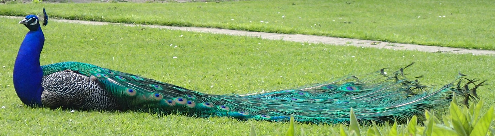

The Indian peacock has iridescent blue and green plumage. The peacock "tail," known as a "train," consists not of tail quill feathers, but highly elongated upper tail coverts. These feathers are marked with eyespots, best seen when a peacock fans his tail. Both sexes of all species have a crest atop the head. The Indian peahen has a mixture of dull grey, brown, and green in her plumage. The female also displays her plumage to ward off female competition or signal danger to her young.
 The green peafowl differs from the Indian peafowl in that the male has green and gold plumage and black wings with a sheen of blue. Unlike the Indian peafowl, the green peahen is similar to the male, only having shorter upper tail coverts, a more coppery neck, and overall less iridescence.
The Congo peacock male does not display his covert feathers, but uses his actual tail feathers during courtship displays. These feathers are much shorter than those of the Indian and green species, and the ocelli are much less pronounced. Females of the Indian and African species are dull grey and/or brown.